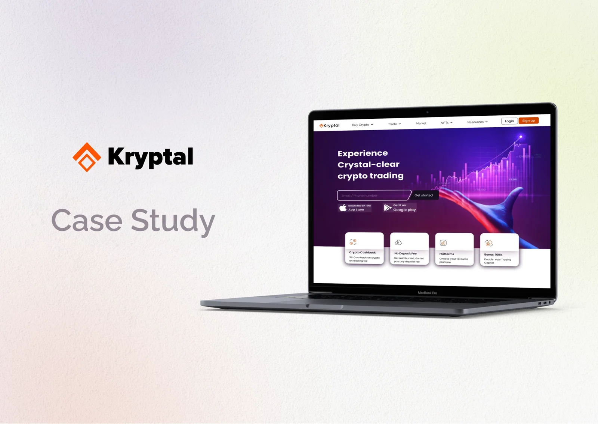
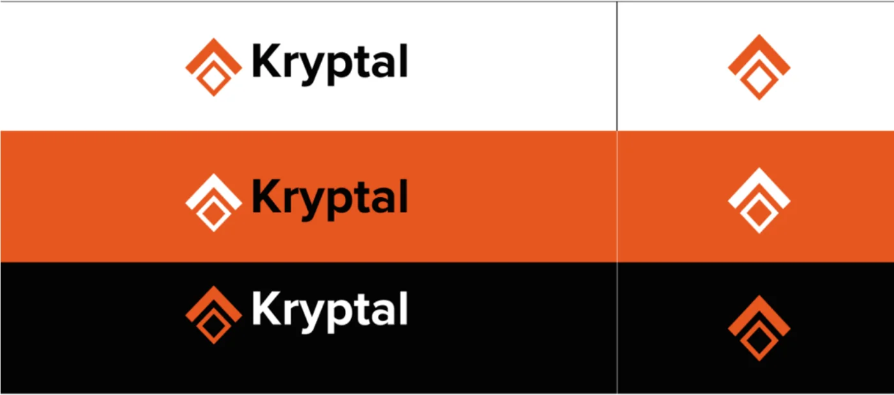
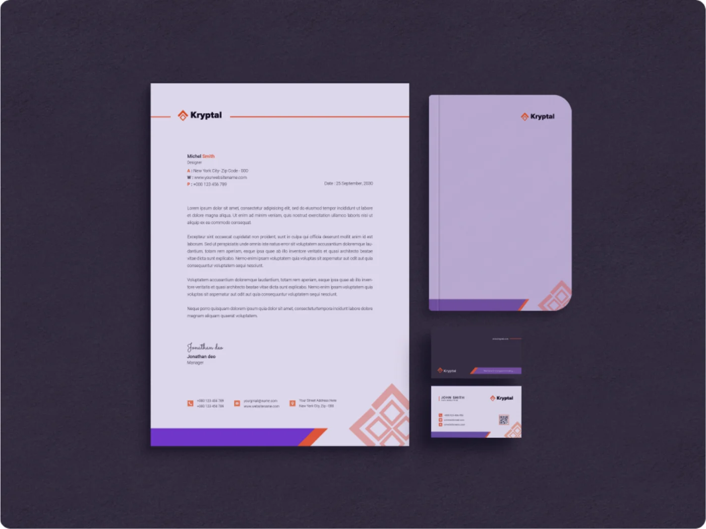
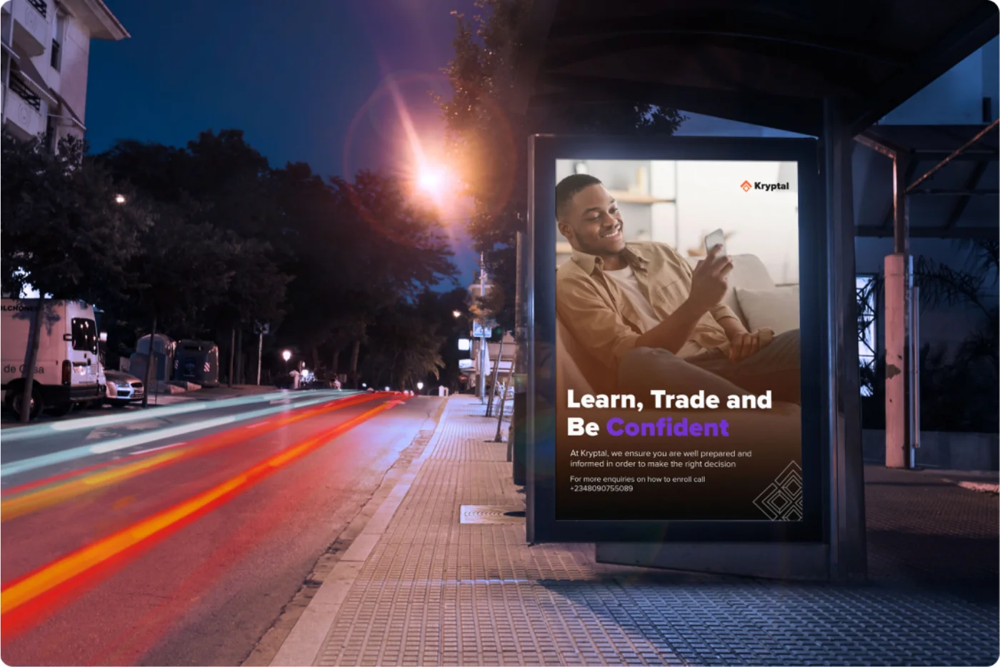

FIG. 03 — DESIGN SPRINT
Kryptal: crypto trading with accessibility built in.
A Web3 exchange platform designed to be accessible and secure for new traders.
- Role
- Design Lead, Brand & UX
- Timeframe
- 2 months (Aug–Sep 2022)
- Tools
- Figma, Illustrator, Photoshop, Miro
- Team
- 5 graphic designers

Project cover with a laptop mockup of the web home page.
10-day design sprint
Sign-language tutorials
The problem
Crypto platforms are hard to trust and hard to read.
Crypto platforms are notoriously hard to navigate: crowded layouts, few trust signals, and real security stakes for new traders.
Process
How the work went.
- FrameHelped the UX team write open-ended research questions and user stories.
- SprintWorked through the 10-day design sprint workshops.
- BrandLed five graphic designers to standardise the brand identity.
- IncludeSign-language tutorial videos and subtitles built into the product.
- ShowCreated mockups for all the graphical branding.
What I did
A fast sprint and one consistent brand.
01Design sprint
Took part in the 10-day design sprint workshops alongside the UX team.
02Brand
Led 5 graphic designers to standardise the brand identity across the product.
03Research framing
Helped the UX team frame open-ended research questions and user stories.
04Accessibility
Sign-language tutorial videos and video subtitles, part of the core product.
Brand work
One identity, from logo to billboard.
I led five graphic designers to standardise the brand, and created the mockups for all the graphical branding. Select an image to open it full size.

Logo system
One mark, three backgrounds.
Before Five designers working on the same product risk five different looks.
After The logo and the icon alone, shown on white, orange and black.
Why A team needs one reference for how the mark is used.

Stationery
The identity on paper.
Before The brand had to work beyond the screen.
After A letterhead, folder and business cards that use the same colours and the diamond pattern.
Why Mockups show how the system holds up in real use.
Campaign
Learn, Trade and Be Confident.
Before New traders worry about making the wrong decision.
After An advert whose message is that Kryptal helps you be well prepared and informed first.
Why The product promises information resources, so the campaign leads with learning.

In context
The same advert at a bus stop.
Before A design that works only on screen is not yet a brand.
After The advert placed in an outdoor mockup.
Why It checks that the layout stays readable at poster scale.
Outcome
Accessibility in the core, not bolted on.
Sign-language tutorial videos and video subtitles were built into the product from the start.